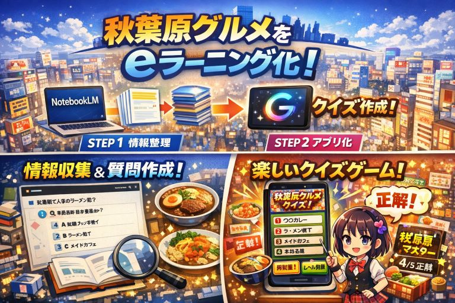
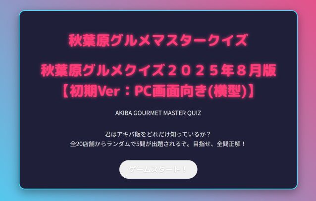
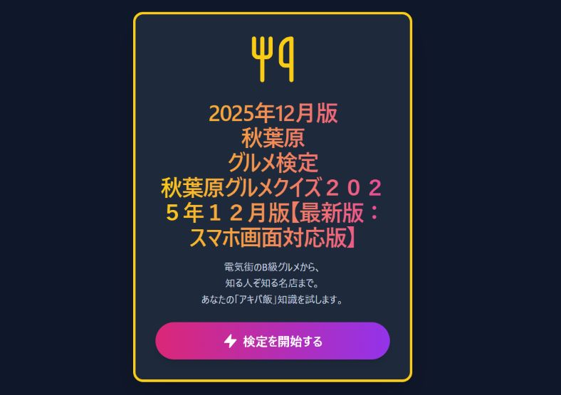
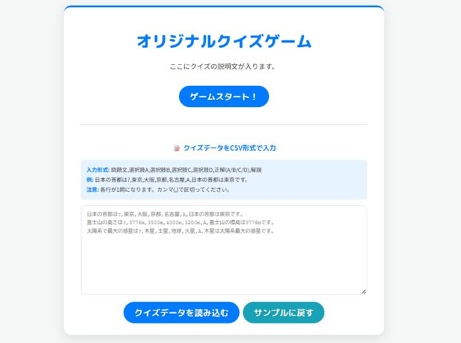
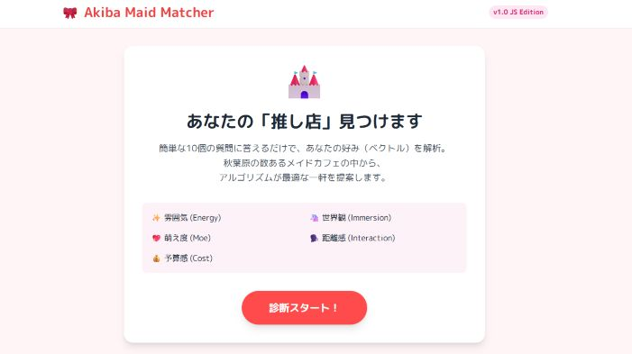

2025/08/19
NotebookLMとGemini2.5 Proを活用した業務生産性向上セミナー
ファシリテータ：sakioAKI
～手法1:秋葉原グルメ情報をeラーニング化～
～手法1: 秋葉原グルメ情報をeラーニング化～
（ＷＥＢアプリケーション化）
① NotebookLMでグルメ情報を収集し、質問集を作成させる。
② Gemini 2.5 Proでグイズアプリ化

秋葉原グルメクイズ
２０２５年８月版
【初期Ver：PC画面向き(横型)】

秋葉原グルメクイズ
２０２５年１２月版
【最新版：スマホ画面対応版】

～独自：クイズフォーマットのみの抽出
秋葉原グルメクイズからクイズフォーマットのみを残して
自分でクイズの設定を試せるＷＥＢアプリケーション

～手法2：メイドカフェ自分好み分析マッチング～
～手法2：メイドカフェ自分好み分析マッチング～
① NotebookLMで秋葉原メイドカフェ情報を整理する
② Gemini 2.5 Proでメイドカフェの好みを分析する
～独自：秋葉原メイドマッチャー２０２５年１２月版
【初期Ver：PC画面向き(横型)】
① NotebookLMで秋葉原メイドカフェ情報を整理する
② Gemini 2.5 Proでメイドカフェの好みを分析する
